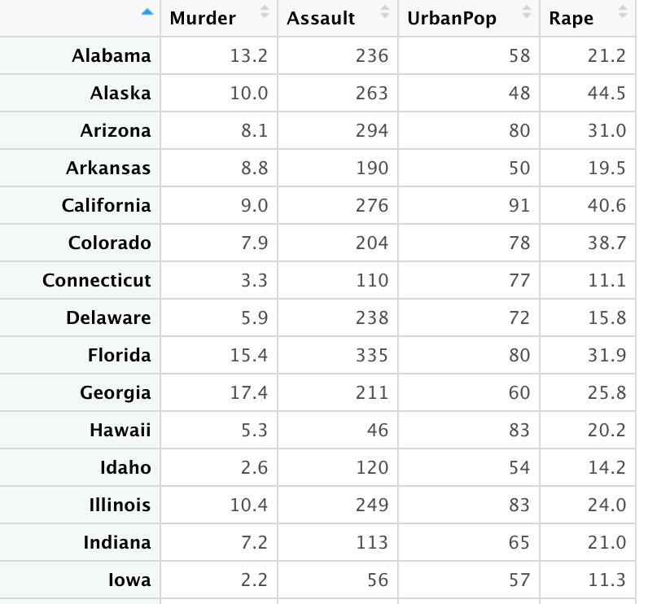
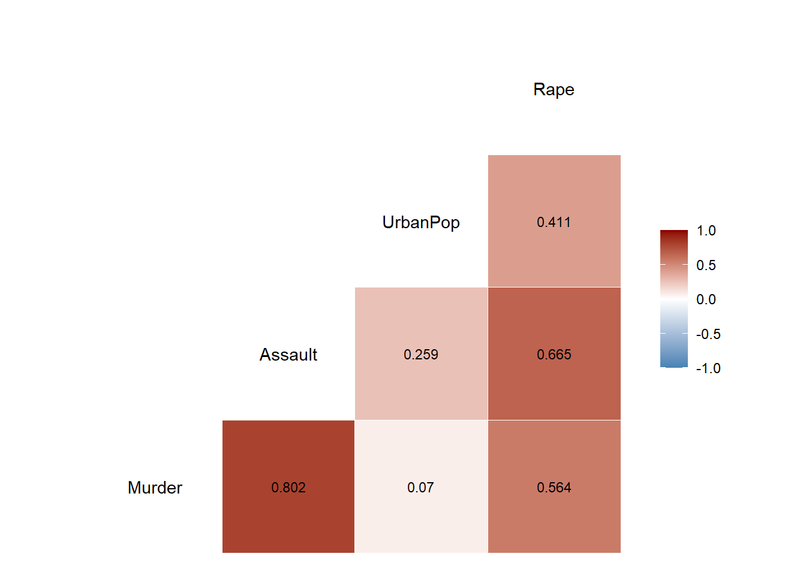

실습 자료 : “USArrests” 데이터셋은 1973년 미국의 50개 주별로 살인(Murder), 폭행(Assault) 그리고 강간(Rape) 범죄의 10만명당 체포 건수와 도시 인구 비율을 포함하고 있다.

2.1 데이터 불러오기
pacman::p_load("data.table", "tidyverse", "dplyr","caret","GGally", # For ggpairs"mlr","clue","parallelMap", # For parallelStartSocket"parallel") # For detectCoresdata("USArrests") # 데이터 불러오기USArrests %>% as_tibble
# 상관계수 그래프ggcorr(USArrests, # 데이터label =TRUE, # 라벨 명시 여부label_round =3, # 상관계수 소숫점 이하 자릿수label_size =3, # 상관계수 글자 크기low ="steelblue", # 상관계수가 음수일 때 색깔mid ="white", # 상관계수가 0에 가까울 때 색깔high ="darkred") # 상관계수가 양수일 때 색깔

2.3 데이터 분할
# Partition (Training Dataset : Test Dataset = 8:2)set.seed(200)ind <-sample(1:nrow(USArrests), 0.8*nrow(USArrests)) # Index를 이용하여 8:2로 분할USArrests.trd <- USArrests[ind,] # Training DatasetUSArrests.ted <- USArrests[-ind,] # Test Dataset
2.4 데이터 전처리
# StandardizationpreProcValues <-preProcess(USArrests.trd,method =c("center", "scale")) # Standardization 정의 -> Training Dataset에 대한 평균과 표준편차 계산 USArrests.trd <-predict(preProcValues, USArrests.trd) # Standardization for Training DatasetUSArrests.ted <-predict(preProcValues, USArrests.ted) # Standardization for Test Datasetglimpse(USArrests.trd) # 데이터 구조 확인
Caution! 특정 머신러닝 알고리듬이 가지고 있는 초모수는 함수 getParamSet()를 이용하여 확인할 수 있다.
USArrests.Learner <-makeLearner(cl ="cluster.kmeans", # 함수 kmeans를 이용하여 군집분석 수행par.vals =list(iter.max =100, # 최대 반복 수nstart =25)) # 수행 횟수USArrests.Learner
Learner cluster.kmeans from package stats,clue
Type: cluster
Name: K-Means; Short name: kmeans
Class: cluster.kmeans
Properties: numerics,prob
Predict-Type: response
Hyperparameters: centers=2,iter.max=100,nstart=25
Caution! 함수 makeLearner()의 인자 par.vals에 함수 kmeans()의 옵션을 입력할 수 있다. iter.max에는 최대 반복 수를, nstart에는 k-means 수행 횟수를 지정할 수 있다. k-means는 초기 중심값을 랜덤하게 선택하기 때문에 이 과정에서 다양한 결과가 나타날 수 있다. 그래서 옵션 nstart를 이용하여 수행 횟수를 늘려 최대한 다양한 초기 중심값에 대해 k-means를 수행하고 최적의 결과를 찾을 수 있다.
2.5.1.3 Define Search Space
함수 makeDiscreteParam() 또는 makeNumericParam()을 이용하여 초모수의 검색 범위를 정의한다.
함수 makeDiscreteParam() : 검색 범위를 특정값으로 정의하는 경우 사용
함수 makeNumericParam() : 검색 범위를 구간으로 정의하는 경우 사용
그러고나서, 함수 makeParamSet()를 이용하여 정의한 검색 범위을 ParamSet 객체로 만든다.
# 초모수 "centers" (군집 수)와 알고리듬의 검색 범위 정의 tune.hyper <-makeParamSet( makeDiscreteParam("centers", # 군집 수 values =3:7), # 군집 수에 대한 검색 범위makeDiscreteParam("algorithm", # k-means 알고리듬values =c("Lloyd", "MacQueen", "Hartigan-Wong"))) # 알고리듬에 대한 검색 범위tune.hyper
Resample description: cross-validation with 5 iterations.
Predict: test
Stratification: FALSE
2.5.1.6 Perform Tuning
최적의 초모수 조합을 찾기 위해 함수 tuneParams()를 이용한다.
parallelStartSocket(cpus =detectCores()) # 병렬 처리set.seed(100)tunedK <-tuneParams(task = USArrests.Task, # Defined Task in 5-1-1learner = USArrests.Learner, # Defined Learner in 5-1-2par.set = tune.hyper, # Defined Search Space in 5-1-3control = gridSearch, # Defined Tuning Method in 5-1-4resampling = kFold, # Defined Resampling Strategy in 5-1-5measures =list(db)) # Davies-Bouldin Index (군집내 유사성이 높고 군집간 유사성이 낮을수록 값이 낮음)tunedK
Result! 초모수 “centers = 4”이고 알고리듬이 “Lloyd”일 때 “Silhouette Index”값이 가장 높다는 것을 알 수 있다.
2.5.2 최적의 초모수 조합과 함께 모형 훈련
2.5.2.1 Redefine Learner
# Redefine Learner with 최적의 초모수 조합tunedKMeans <-setHyperPars(USArrests.Learner, # Defined Learner in 5-1-2par.vals =list(centers = tunedK$x$centers, # 최적의 군집 수algorithm = tunedK$x$algorithm)) # 최적의 알고리듬tunedKMeans
Learner cluster.kmeans from package stats,clue
Type: cluster
Name: K-Means; Short name: kmeans
Class: cluster.kmeans
Properties: numerics,prob
Predict-Type: response
Hyperparameters: centers=7,iter.max=100,nstart=25,algorithm=Hartigan-Wong
2.5.2.2 Train Model
tunedKMeansModel <-train(tunedKMeans, # Defined Learner in 5-2-1 USArrests.Task) # Defined Task in 5-1-1tunedKMeansModel
Model for learner.id=cluster.kmeans; learner.class=cluster.kmeans
Trained on: task.id = USArrests.trd; obs = 40; features = 4
Hyperparameters: centers=7,iter.max=100,nstart=25,algorithm=Hartigan-Wong
K-means clustering with 7 clusters of sizes 5, 6, 6, 7, 7, 6, 3
Cluster means:
Murder Assault UrbanPop Rape
1 0.56255999 1.1067356 1.1837676 1.9283197
2 1.27699731 0.9532023 0.1908547 0.5829423
3 0.08098804 -0.2660328 -0.4765513 -0.2572366
4 -1.13878299 -1.1439268 -1.2409738 -1.1698985
5 -0.44629702 -0.0736253 0.7662624 0.1581765
6 -0.81007846 -0.9512389 0.4952855 -0.6409547
7 1.66510628 1.5245346 -1.2844639 -0.2226838
Clustering vector:
Pennsylvania Washington South Carolina Minnesota Nevada Utah Montana Louisiana Nebraska Tennessee Mississippi Maryland South Dakota
6 5 7 6 1 5 3 2 6 2 7 2 4
Delaware Oklahoma New Mexico Colorado New Jersey Wisconsin Virginia North Dakota Arizona Hawaii New Hampshire California Alabama
5 5 2 1 5 6 3 4 1 6 4 1 2
Michigan Ohio Oregon Connecticut Texas Arkansas North Carolina Maine Indiana Wyoming Kentucky Iowa Vermont
1 5 5 6 2 3 7 4 3 3 3 4 4
West Virginia
4
Within cluster sum of squares by cluster:
[1] 3.970393 4.544595 2.689821 3.834536 5.417810 3.459916 1.052706
(between_SS / total_SS = 84.0 %)
Available components:
[1] "cluster" "centers" "totss" "withinss" "tot.withinss" "betweenss" "size" "iter" "ifault"
# Training Dataset의 각 군집별 특징 시각화USArrests.trd.clus <-mutate(USArrests.trd,kMeansCluster =as.factor(kMeanModel$cluster)) # 예측 모형에 의한 군집 결과USArrests.trd.clus %>% as_tibble